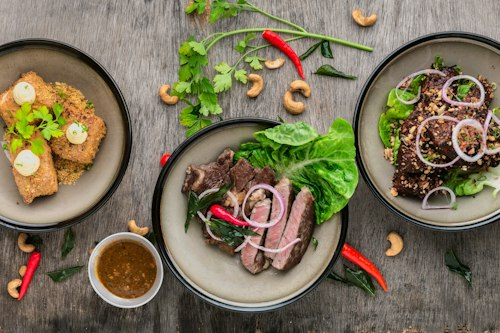

Introducción a la Gastronomía Mundial
La comida es una de las mejores formas de conocer otras culturas. En este proyecto queremos compartir algunos de los platos más representativos de diferentes partes del mundo, descubriendo sus orígenes, ingredientes y formas tradicionales de preparación.
Tradición Cultural en Cada Receta
Desde el horno de leña napolitano hasta las barras tradicionales de Tokio y los puestos callejeros de Ciudad de México, cada plato refleja la identidad de su región y el saber hacer transmitido entre generaciones.
Cada receta tiene su propia historia, ingredientes típicos y un sabor único. En esta web iremos viendo opciones para todos los gustos con precios orientativos entre 9,90 € y 18,75 €.

Ingredientes Frescos y Auténticos
El secreto de la cocina internacional reside en respetar las materias primas originales: albahaca fresca y mozzarella en Italia, pescado de corte preciso en Japón o especias y chiles marinados en México.
Combinar estos productos permite descubrir contrastes de sabores dulces, salados, ácidos y picantes en una misma mesa compartida.
Nuestras Especialidades Favoritas
A continuación se presentan las tres especialidades principales que forman parte del menú principal de este recorrido gastronómico:
Platos Destacados del Catálogo
- Pizza Margarita: icono de la sencillez italiana con tomate, mozzarella y albahaca.
- Sushi de Salmón: técnica milenaria japonesa de corte de pescado y sazonado de arroz.
- Tacos al Pastor: fusión mestiza mexicana con carne adobada en achiote y asada en trompo.
Para aprender más sobre recetas e ingredientes del mundo, visita esta web de cocina.
Puedes consultar los datos estructurados en formato XML en datos.xml o revisar el catálogo y tabla comparativa de platos.
Si quieres proponernos tu receta favorita o inscribirte en los talleres gastronómicos, visita nuestra sección de contacto.
Ficha Técnica Resumida
Resumen comparativo de especialidades registradas (código, procedencia, tiempo y precio en €):
CÓDIGO PLATO ORIGEN TIEMPO PRECIO
---------------------------------------------------------
P01 Pizza Margarita Italia 45 min 12.50 €
P02 Sushi de Salmón Japón 60 min 18.75 €
P03 Tacos al Pastor México 50 min 9.90 €